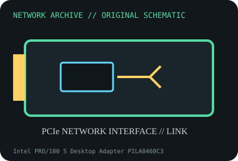

[ MODEL-SPECIFIC NETWORK HARDWARE ]
Intel PRO/100 S Desktop Adapter PILA8460C3
Legacy PCI Fast Ethernet desktop NIC with hardware-assisted networking features. Confirm exact product label and revision before applying specifications.

IDENTIFICATION: Confirm manufacturer PID, hardware revision, device ID or module suffix. Nominal standards/link rates are not measurements of payload performance.
Exact specifications and compatibility
| Dedicated subcategory | Legacy networking adapters |
|---|---|
| Exact product/model | Intel PRO/100 S Desktop Adapter PILA8460C3 |
| Bus, ports and physical interface | 32-bit PCI bus; one RJ-45 10/100BASE-TX port; WOL header varies by card package. |
| PHY, radio or protocol | Intel PRO/100 S family controller; IEEE 802.3/802.3u auto-negotiated Ethernet. |
| Nominal rate (not measured) | 10 or 100Mb/s nominal link; not measured throughput. |
| Measured throughput | No measured benchmark is claimed for a physical specimen. A valid result must record host/peer, link partner, media/cable, driver/firmware, traffic pattern, test tool and duration. |
| Drivers, OS and firmware | Legacy Intel PROSet/Windows packages and Linux e1000e driver support varies by OS release; modern 64-bit OS may no longer offer vendor package. |
| Compatibility | Requires conventional PCI slot (not PCIe) and 10/100 switch; duplex and WOL behavior require board/header and driver support. |
| Variant warning | PILA8460C3 differs from later PILA8460B and OEM PRO/100 adapters; verify exact revision and device ID before using archived driver. |
Model and revision notes
PILA8460C3 differs from later PILA8460B and OEM PRO/100 adapters; verify exact revision and device ID before using archived driver.
Legacy Intel PROSet/Windows packages and Linux e1000e driver support varies by OS release; modern 64-bit OS may no longer offer vendor package.
Requires conventional PCI slot (not PCIe) and 10/100 switch; duplex and WOL behavior require board/header and driver support.
Archival, ESD and preservation notes
Record PCI IDs, board revision, MAC and WOL cable/header. Inspect for corrosion and store in ESD packaging; do not flex aged PCB.
Document source URL, access date, document revision and specimen label/condition. Preserve without credentials or private configuration.
Primary manufacturer and standards sources
- Intel PRO/100 S Desktop Adapter product supportPrimary manufacturer or standards documentation; verify exact SKU and host revision.
- Intel legacy Ethernet driver archivePrimary manufacturer or standards documentation; verify exact SKU and host revision.
- IEEE 802.3u Fast Ethernet standardPrimary manufacturer or standards documentation; verify exact SKU and host revision.
Manufacturer statements cover the named part or its documented product family; the exact labeled revision and vendor compatibility list take precedence.